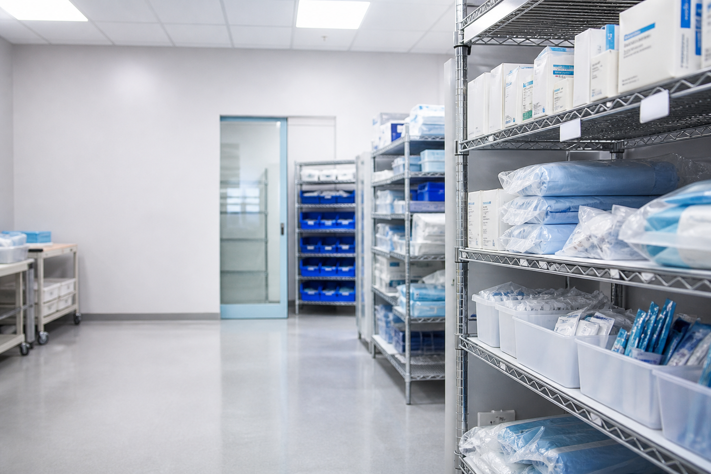

Workday · Mobile
Workday · Mobile
Mobile Inventory Modernization
Extending Canvas Web for mobile web on healthcare facility scanners — components re-proportioned in code and shipped across 21 inventory tasks.

Canvas Web is built for desktop. We run it in mobile web on Zebra scanners — and the legacy mobile stack was sunsetting.
Extend the design system, don't fork it. Re-proportion the shared components once — all 21 tasks inherit.
Connected Cursor to the Canvas Web repo — Figma specs to token updates in code. Proved on one task, then scaled to every component.
9 PRs merged to production. Component updates adopted by other mobile teams.

Context
A desktop design system, shift-long on a healthcare facility scanner

The smallest device sets the floor
Clinical staff run inventory in mobile web on Zebra handhelds — rugged Android scanners in a healthcare facility supply area, with a hardware trigger and gloves-on use. The smallest screen in the fleet is our design minimum; desktop spacing breaks below that.
- Design floor Smallest Zebra viewport — we size to that minimum
- Input Hardware scan trigger first, touch second
- Session Full shift, hundreds of lines — density beats whitespace
- Stack React WebView — native Canvas Mobile isn't available to us
Scope
21 tasks — full inventory lifecycle
Not one pick screen. Every phase below runs on the same handheld WebView and shares the same component library.
- Supplier agreements
- Order & receive
- Replenishment
- Put-away
- Transfer location
- Inventory movements
- Par count
- Adjust inventory
- Inventory counts
- Batch pick
- Issue & ship
- Returns
Starting point
Desktop defaults on a sunsetting stack
What we had
Legacy MAX mobile layer timing out under load. Canvas Web at desktop proportions — airy rows, truncated labels, scanner chrome eating the form.
What we chose
Extend Canvas Web for mobile web. Audit the shared components, re-proportion with existing tokens, and fix once — every task inherits.
Components
Same library. Design in code. Shipped to production.
Canvas Web is desktop-sized. Checked all 21 tasks at minimum width.
Re-sized padding & spacing with Canvas tokens.
9 PRs merged — top 3 contributor on the frontend work
Design in code
Cursor bridged Figma specs to production
One of few Workday designers who ship to the repo — not just the file. I connected Cursor to the Canvas Web GitHub, pulled the design system into my workspace, and closed the gap between design and engineering.
-
Connect the repo
Cursor linked to the Canvas Web GitHub — same codebase engineering reviews, design system on my machine.
-
Spec from Figma
Spacing and token values from Figma specs — prompted Cursor to apply the same Canvas tokens in component code.
-
Trial, then scale
Validated on the first inventory task, then rolled the pattern across every component in the modernization — 9 PRs merged.
Three examples — before & after
Fix once. Every task inherits.
Action bar
Labels truncated on the narrowest scanner. Swapped fixed spacing for clamp() — full text at minimum width.


List row
Only 6 of 8 rows visible. Tightened padding — same layout, more lines per screen.

Scan input
Blue panel ate a third of the screen. Moved scan state into the action bar.


Before & after — the whole app
The same end-to-end pick flow, rebuilt on the updated components
Legacy MAX on stock defaults — pick one line at a time, airy rows, a keypad covering half the screen.


Batch pick on the updated components — denser rows, fluid action bar, and the scanner driving every step.


Outcomes & learnings
Lead UX · design direction · design in code
-
Extended Canvas Web for mobile
Adapted spacing and density for Zebra scanners — same tokens, new proportions.
-
One catalog for 21 inventory tasks
Every screen pulls from the same shared component library.
-
Adopted by other teams
The mobile-web variants outlived the inventory project.
-
Nine PRs merged
Spacing, density, and fidelity shipped in code — not just in Storybook.
- Audit tasks before components All 21 screens had the same problem: desktop proportions on a handheld. Fix the library once, not each screen.
- Extend tokens, don't fork Reuse existing Canvas tokens and change proportions only. That's adoptable; a fork isn't.
- Prove it on the highest-volume flow Batch pick is the most scan-driven workflow. Nail it there, and rollout to everything else is straightforward.
- Design in code closes the gap Figma specs set the target; Cursor applied Canvas tokens in the real repo. Proving it on one task made scaling to 21 screens repeatable.